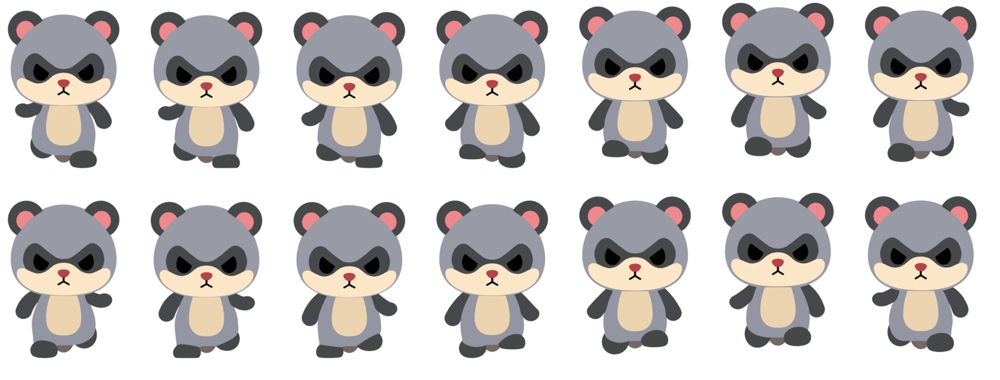
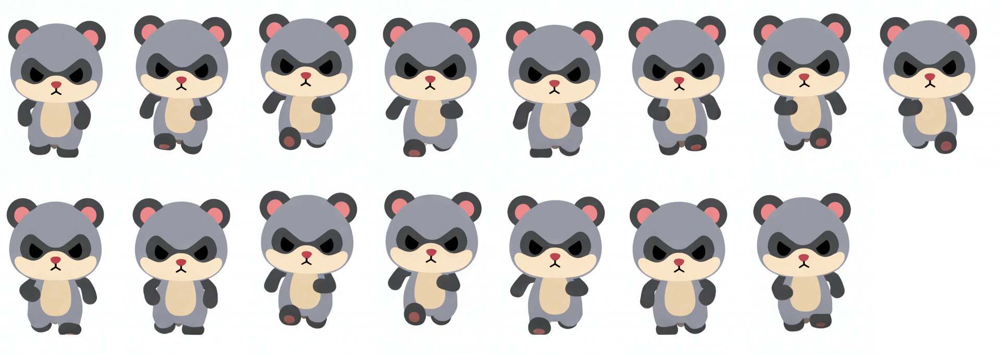
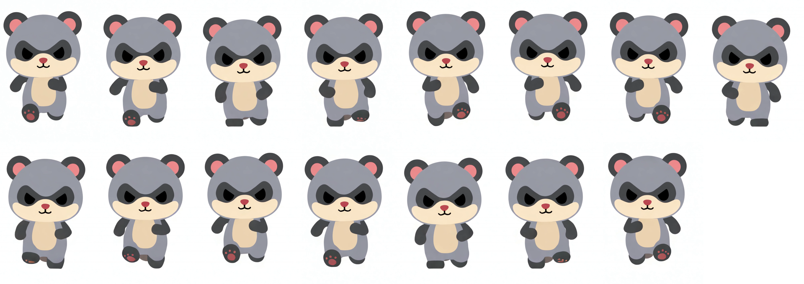

正面の1秒分（元動画 C と同じ指示）：

正面の1秒分（「肘を曲げて胸の高さで振る」と指示）：

注意：生成動画の足裏には、キャラクターの設定にないピンクの肉球が描かれています。形や色ではなく、動きの参考としてだけ見てください。
| 条件 | 傾きの振れ幅 | 見かけの長さの変化 |
|---|---|---|
| 今のリグ（体の左右方向の軸で振る＋開き 11.3°） | 41° | 31% |
| 腕の曲がりを一定に固定 | 56° | 37% |
| まっすぐな腕、開きなし（振るだけ） | 53° | 54% |
| 腕が垂れている面に沿って振る | 11° | 60%（手前に向いて短く潰れる） |
斜めに垂れた腕を前後に振る限り、正面からは「傾きの揺れ」か「短く潰れる」のどちらかが出ます。元動画は、肘を曲げて手を体の前・中心寄りに持ってくることで、これを避けています。